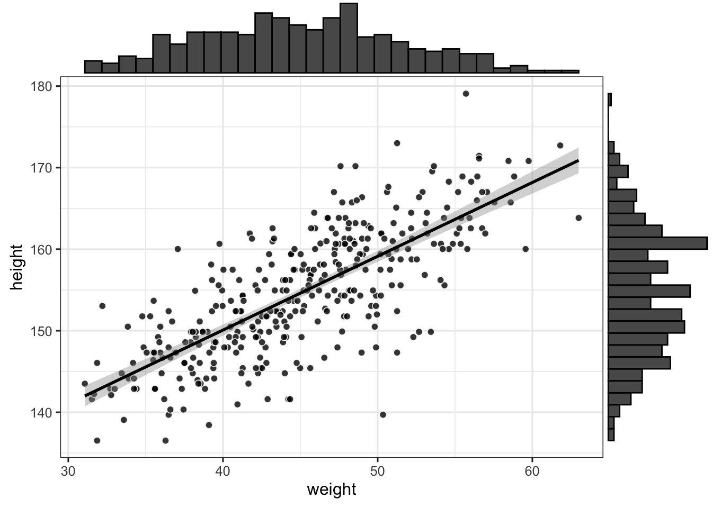
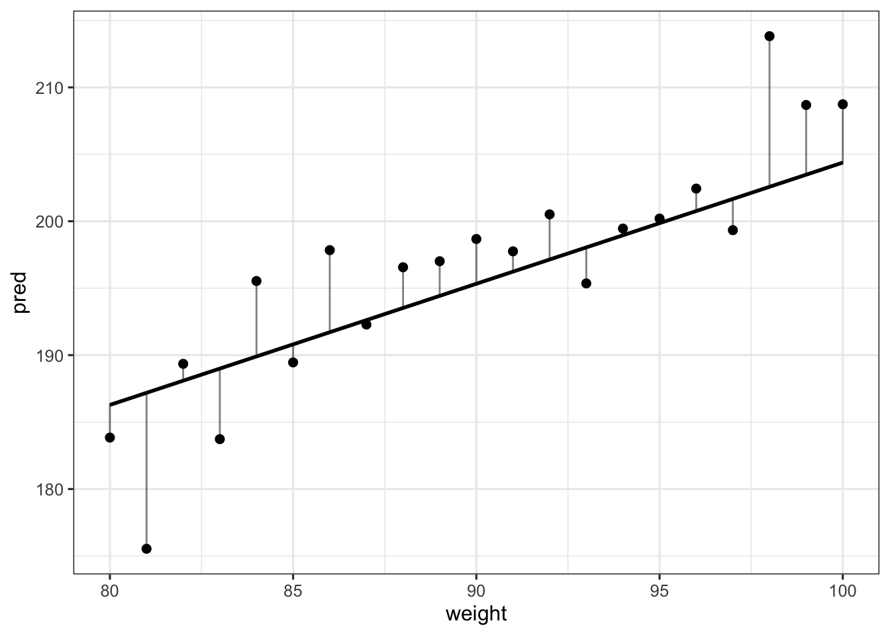
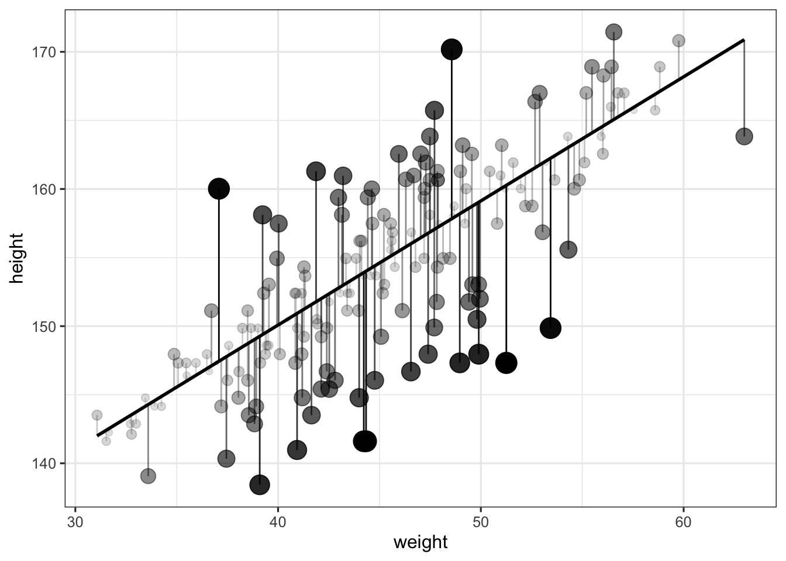
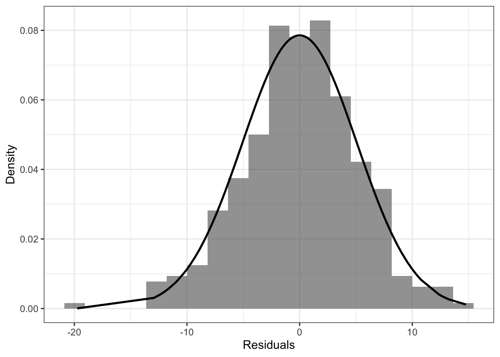

Using R to make sense of the generalised linear model
What is the difference between the errors and the residuals? What does it mean for a model to predict something? What is a link function? In the current post, we use four R functions (the predict, fitted, residuals and simulate functions) to illustrate the mechanisms and assumptions of the generalised linear model.
Tutorial
R
GLM
Author
Ladislas Nalborczyk
Published
2018-01-15
Statistical models
Modern science rests on several foundational pillars. Among these is the ability to construct sufficiently solid theoretical abstractions that are able to explain concrete observable aspects of the world. Once the applicability range of a theoretical model has been defined, it is usually compared to another model that is similar in its goal (i.e., another model that aims to explain similar aspects of the world). However, we rarely directly compare theoretical models. Instead, we are brought to compare statistical models that aim to represent theories.
According to Rouder, Morey, & Wagenmakers (2016), “Models are devices that connect theories to data. A model is an instantiation of a theory as a set of probabilistic statements”. One common and convenient example of such instantiation is the linear model, which –in its general form– allows to predict parameter(s) of a distribution, which is supposed to reflect the distribution from which the observed data is issued (the data generation process).
But what does it mean for a model to predict something? In the current post, I focus on four R functions (the predict, fitted, residuals and simulate functions), exploring the similarities and differences between these functions, to illustrate the mechanisms and assumptions of the generalised linear model.
Where, in Bayesian terms, the first line of the model corresponds to the likelihood of the model, which is the assumption made about the data generation process. We make the assumption that the outcomes \(y_{i}\) are normally distributed around a mean \(\mu_{i}\) with some error \(\sigma\). This is equivalent to say that the errors are normally distributed around \(0\).
Of course, the distributional assumption is not restricted to be Gaussian, and can be adapted to whatever distribution that makes sense in consideration of the data at hand. The linear aspect of the linear model actually refers to the second line of the above description, in which one tries to predict parameters of the distribution (e.g., \(\mu_{i}\) or \(\sigma\)) by a linear combination of some predictor variable(s). Generalising to other distributions, the generalised linear model can be rewritten as:
Where the response \(y_{i}\) is predicted through the linear combination \(\eta\) of predictors transformed by the inverse link function \(f\), assuming a certain distribution \(D\) for \(y\) (also called the family), and family-specific parameters \(\theta\) (Bürkner, 2017).
Below, we illustrate a simple Gaussian linear model using the Howell1 dataset from the rethinking package (McElreath, 2016), which contains data about 544 individuals, including height (centimetres), weight (kilograms), age (years) and gender (0 indicating female and 1 indicating male).
library(rethinking)library(tidyverse)library(ggExtra)data(Howell1)d <- Howell1 %>%filter(age >=18)p <- d %>%ggplot(aes(x = weight, y = height) ) +geom_point(pch =21, color ="white", fill ="black", size =2, alpha =0.8) +geom_smooth(method ="lm", colour ="black") +theme_bw(base_size =12)ggMarginal(p, type ="histogram")

A quick visual exploration of the dataset reveals a positive relationship between height and weight. The above plotted regression line corresponds to the following model, where we assume a normal likelihood:
The intercept (113.879) represents the predicted height when weight is at 0 (which makes no much sense in our case), whereas the slope (0.905) represents the change in height when weight increases by one unit (i.e., one kilogram).
Prediction is key: predict and fitted
The main advantage of the previous model is that it allows to make predictions for any value of \(\text{weight}\). In R, this is done using the aptly named predict function. For instance, we can ask our model what is the expected height for an individual of weight 43, which is equal to \(\alpha + \beta \cdot 43\).
Implementing the function predict by hand is quite easy and will allow us to better understand how it works. This function is actually simply retrieving parameters of the fitted model (in our case, the intercept and the slope) to make predictions about the outcome variable, given some values of the predictor(s). In other words, it corresponds to the second line of our model.
d <- d %>%mutate(pred_mod1 =predict(mod1),pred_mod1_2 =coef(mod1)[1] +coef(mod1)[2] * weight )head(d)
We could also be interested in predicting the height of individuals with other weights that the weights we observed (e.g., weights between 80 and 100 kgs). Below we simulate new data from our model (i.e., we simulate heights) and predictions for this new set of data (i.e., the \(\mu_{i}\)).
# generating weights from 80 to 100 kgsdata.frame(weight =80:100) %>%# retrieving mod1 predictionsmutate(pred =predict(mod1, newdata = .) ) %>%# simulating data from our model, taking into account sigmamutate(sim = pred +rnorm(length(weight), 0, sd(residuals(mod1) ) ) ) %>%# or using sigma(mod1) instead of sd(residuals(mod1) ), as suggested# by Tristan Mahr (https://www.tjmahr.com)mutate(sim = pred +rnorm(length(weight), 0, sigma(mod1) ) ) %>%# plotting these predictionsggplot(aes(x = weight, y = pred) ) +geom_line(size =1) +geom_point(aes(x = weight, y = sim), size =2) +geom_segment(aes(xend = weight, yend = sim),size =0.5, alpha =0.5, lineend ="round" ) +theme_bw(base_size =12)

Where the vertical lines represent deviations from the predicted values. OK, so we’ve seen the the predict function simply uses the linear model to make predictions about the \(\mu_{i}\).
You might know that there exists a similar function, the fitted function, which allows to extract fitted values of a model.
d <- d %>%mutate(fitted_mod1 =fitted(mod1) )head(d)
Surprisingly, the predict and fitted functions seem to do the exact same thing (at least their results are the same)… but do they? To answer this question, let’s ask another one.
Link function, toward GLMs
Can we predict gender by individual height? The usual way to answer this kind of question is through a logistic regression model (or logit model). Logistic regression is used to model binary outcome variables, using the linear regression framework. In the logit model, the log-odds of the outcome \(p_{i}\) are modelled as a linear combination of the predictor variables:
Thus, although the observed outcome variable is a dichotomic variable, the logistic regression estimates the log-odds, as a continuous variable, that the outcome variable is in a certain state (in our case, that the individual is a man)1. This model can be written as follows, where \(p_{i}\) is the probability that an individual is a man.
This model is implemented easily in R using the glm function, where the family argument is used to specify the likelihood of the model, and the link function.
(mod2 <-glm(male ~ height, data = d, family =binomial(link ="logit") ) )
Call: glm(formula = male ~ height, family = binomial(link = "logit"),
data = d)
Coefficients:
(Intercept) height
-53.3653 0.3438
Degrees of Freedom: 351 Total (i.e. Null); 350 Residual
Null Deviance: 486.6
Residual Deviance: 258.7 AIC: 262.7
Below we print predictions of the model, using both the predict and fitted functions.
d <- d %>%mutate(pred_mod2 =predict(mod2),fitted_mod2 =fitted(mod2) )d %>%select(height, weight, male, pred_mod2, fitted_mod2) %>% head
This time the results of predict and fitted appear to be quite different… We can plot the predictions of mod2 following the same strategy as previously using fitted. The logit_dotplot function displays the prediction of the logit model along with the marginal distribution of height by gender (detailed code can be found here ).
The output of the predict and fitted functions are different when we use a GLM because the predict function returns predictions of the model on the scale of the linear predictor (here in the log-odds scale), whereas the fitted function returns predictions on the scale of the response. To obtain the fitted values, we thus have to apply the inverse of the link function to the predicted values obtained with predict. In our case, this translates to the logistic transformation:
\[p = \exp(\alpha) / (1 + \exp(\alpha) )\]
Which, in R, gives:
exp(coef(mod2) ) / (1+exp(coef(mod2) ) )
(Intercept) height
6.664323e-24 5.851092e-01
Which is equivalent to using the plogis function:
plogis(coef(mod2) )
(Intercept) height
6.664323e-24 5.851092e-01
Let’s compare our previous calls to the predict and fitted functions…
d <- d %>%mutate(pred_mod2_2 =plogis(predict(mod2) %>% as.numeric) )d %>%select(height, weight, male, pred_mod2, fitted_mod2, pred_mod2_2) %>% head
To sum up, the fitted function automatically applies the inverse transformation to provide prediction on the scales of the outcome. A similar behaviour can be obtained by using the predict function, and by specifying the scale in which we want to obtain predictions (e.g., in the scale of the response variable).
d <- d %>%mutate(pred_mod2_3 =predict(mod2, type ="response") )d %>%select(height, weight, male, pred_mod2, fitted_mod2, pred_mod2_2, pred_mod2_3) %>% head
To relate this to our understanding of the linear model equation, prediction pertains to the \(\mu_{i}\), meaning that we try to predict the mean observed outcome for a specific value of the predictor \(x_{i}\).
We should go further and implement uncertainty in these predictions, but we should first take a break to examine the concepts of errors and residuals, and their relationship.
Errors and residuals: the residuals function
A very common fallacy about the assumptions of the linear (Gaussian) model is that the outcome variable should be normally distributed. Instead, this assumption concerns the distribution of the outcome variable around its predicted value (i.e., the distribution of the errors).
What we actually said above is that the errors \(\epsilon_{i}\) should be normally distributed around the predicted value. But the errors are the the non-observed (and non-observable) differences between the theoretical predicted value \(\mu\) and the observed outcomes. Consequently, we do not have access to it. Instead, what we can work with are the residuals \(e_{i}\), which can be seen as an estimate (from the sample) of the errors \(\epsilon_{i}\), in a similar way as \(b\) is an estimate of \(\beta\). To sum up, the residuals are the \(e_{i} = y_{i} - \bar{X}\) whereas the errors are the \(\epsilon_{i} = y_{i} - \mu_{i}\).
In other words, errors pertain to the data generation process, whereas residuals are the difference between the model’s estimation and the observed outcomes. Basically, the residuals are the difference between the observed value and the predicted value. We can obtain them easily using the residuals function (which is useful for more complex models), or by subtracting to each observed outcome \(y_{i}\) the predicted \(\mu_{i}\).
d <- d %>%mutate(res1 =residuals(mod1),res2 = height - pred_mod1 )d %>%select(height, weight, male, pred_mod1, res1, res2) %>% head
Below we plot these residuals, and make the alpha (i.e., the transparency) and the size of the points dependent on the distance to the predicted value (so that larger residuals appear as bigger and less transparent). This distance is also represented by the length of the vertical lines.
d %>%sample_frac(0.5) %>%# selecting a (50%) subsample of the dataggplot(aes(x = weight, y = height) ) +geom_line(aes(y = pred_mod1), size =1) +geom_point(aes(alpha =abs(res1), size =abs(res1) ) ) +guides(alpha =FALSE, size =FALSE) +geom_segment(aes(xend = weight, yend = pred_mod1, alpha =abs(res1) ) ) +theme_bw(base_size =12)

If we take all the above verticals bars (i.e., the residuals) and plot their distribution, we can compare them to a normal distribution with mean 0, and standard deviation \(\sigma\) equal to the standard deviation of the residuals, to check our assumption about the distribution of the residuals (here a normality assumption).
d %>%ggplot(aes(x = res1) ) +geom_histogram(aes(y = ..density..), bins =20, alpha =0.6) +geom_line(aes(y =dnorm(res1, mean =0, sd =sd(res1) ) ), size =1) +guides(fill =FALSE) +theme_bw(base_size =12) +labs(x ="Residuals", y ="Density")

To sum up, the distributional assumption of the linear model (Gaussian or whatever) concerns the distribution of the errors, that we do not know. Instead, we can evaluate the distribution of the residuals, which are the observed differences between the outcome variable and the predictions of the model.
So far, we used the linear part of the linear model (i.e., the second line) to make predictions about the \(\mu_{i}\), from \(\alpha\) and \(\beta\). In other words, we made predictions about mean values of the Gaussian distribution for a specific value of weight.
Now, if we want to generate actual data (i.e., the \(y_{i}\)), from our model, we still have to include \(\sigma\). This can be done “by-hand”, by adding error (i.e., some random variation) to our predictions.
d <- d %>%mutate(sim1 =coef(mod1)[1] +coef(mod1)[2] * d$weight +rnorm(1, 0, sigma(mod1) ) )d %>%select(height, weight, male, pred_mod1, sim1) %>% head
The first shaded region around the regression line represents the 95% confidence interval around the regression line, whereas the second broader shaded area represents the 95% central quantiles of the Gaussian distribution at each value of weight. These are computed by simulating nsims height values at each weight value, and by taking the 95% mean values of this distribution.
Conclusions
In this post, we tried to shed light on some concepts of the generalised linear model by examining the similarities and differences between four common R functions. It should be acknowledged that these functions (predict, fitted, residuals, and simulate) work with many different types of models, including models fitted with lme4 or brms. For instance, here is an overview of the available methods in my current session.
Bürkner, P.-C. (2017). brms: An R package for bayesian multilevel models using Stan. Journal of Statistical Software, 80 (1), 1–28. doi:10.18637/jss.v080.i01
McElreath, R. (2016). Statistical Rethinking (p. 469). Chapman; Hall/CRC.
Rouder, J. N., Morey, R. D., & Wagenmakers, E.-J. (2016). The Interplay between Subjectivity, Statistical Practice, and Psychological Science. Collabra, 2(1), 1–12. doi:10.1525/collabra.28
Footnotes
For more details on the logit model, please check this previous post.↩︎
Citation
BibTeX citation:
@online{nalborczyk2018,
author = {Nalborczyk, Ladislas},
title = {Using {R} to Make Sense of the Generalised Linear Model},
date = {2018-01-15},
url = {https://lnalborczyk.github.io/blog/2018-01-20-glm},
langid = {en}
}